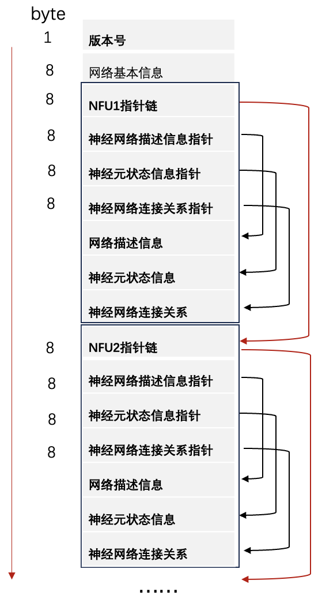

子网执行体
子网执行体概述
TruSynapse 将神经网络以 NFU（Neural Functional Unit）为粒度进行切分、存储布局和调度决策。每个子网对应一个适配单个 NFU 的计算单元，包含其计算图、权重和必要的元数据，能独立进行部署与执行。
关键行为与特性：
切分与存储：模型的计算与参数按 NFU 粒度划分，便于实现内存局部性和带宽优化。
调度：专用子网调度器负责将子网映射到具体 NFU 上，调度策略类似操作系统将进程调度到 CPU 核心，包含负载均衡和资源约束考虑。
分布式执行：通过上层资源管理组件可实现跨节点部署，从而支持并行计算与弹性扩展。
上述设计使得子网在单节点和分布式环境中均能高效调度与执行，并利于资源隔离与扩展性规划。
子网执行体结构
NFU子网执行体结构中的神经网络描述信息包含：
NFU编号
子网在神经网络全局中的位置，比如是否是输入层/输出层/隐藏层
NFU内各GNC之间的连接关系
子网的输入层、输出层神经元列表
前驱NFU，以及前驱NFU输出层逻辑神经元号与本子网输入层物理神经元的对应关系
后继NFU
子网执行体数据结构SNNData
1class SNNData(Structure):
2"""SNN计算所需的数据结构，与C库中的定义对应"""
3 _fields_ = [
4 ("params", c_uint64 * 27), # 27个配置参数
5 ("connection_data", POINTER(c_uint64)), # 连接数据
6 ("connection_len", c_size_t), # 连接数据长度
7 ("inputneuronlist_data", POINTER(c_uint32)), # 输入神经元列表
8 ("inputneuronlist_len", c_size_t), # 输入神经元列表长度
9 ("inputspike_data", POINTER(c_uint32)), # 输入脉冲数据
10 ("inputspike_len", c_size_t), # 输入脉冲数据长度
11 ("neuronbase_data", POINTER(c_uint32)), # 神经元数据
12 ("neuronbase_len", c_size_t), # 神经元数据长度
13 ("neuron_data", POINTER(c_uint32)), # 神经元配置数据
14 ("neuron_data_len", c_size_t), # 神经元配置数据长度
15 ("output_data", POINTER(c_uint32)), # 输出结果数据
16 ("output_len", c_size_t) # 输出结果长度
17 ]
字段说明：
params: 27个64位配置参数，对应snnparam.txt文件内容，定义硬件工作模式和内存布局connection_data: 指向64位连接权重数据的指针，描述神经元之间的连接强度inputneuronlist_data: 指向32位输入神经元列表的指针，指定哪些神经元接收外部输入inputspike_data: 指向32位输入脉冲时序数据的指针，定义输入脉冲的时间序列neuronbase_data: 指向32位神经元基础参数的指针，包含神经元的初始状态和基本属性neuron_data: 指向32位神经元配置数据的指针，定义神经元的类型和特性参数output_data: 输出结果数据指针，由驱动库在计算完成后填充_len字段: 对应数据数组的元素数量
神经网络文件格式
神经网络文件由一个版本号和若干按顺序存储的 NFU 子网执行体组成。每个子网执行体（NFU 执行体）包含 指向下一个执行体的偏移、神经网络描述信息、神经元状态表与连接关系等段的指针。总体文件布局示意如下（ 字节偏移以文件起始为基准，指针为 8 字节无符号整数，表示文件内的字节偏移；0 表示空指针）：
- 第 0 字节（1 byte）
版本号：用于区分不同的网络描述格式和解析规则。
- 第 1–8 字节（8 bytes）
网络基本信息区：记录全局信息，例如 NFU 总数、输入/输出 NFU 编号、保留字段等。
NFU 执行体存储结构（按顺序排列，每个 NFU 对应一段）
每个 NFU 执行体头部包含若干指针字段（均为 8 字节），指示后续各数据段在文件中的偏移位置。 以第一个 NFU 为例，头部字段（相对于文件起始的字节偏移）可以表示为：
第 9–16 字节（8 bytes）
下一 NFU 偏移：指向下一个 NFU 执行体的文件偏移。值为 0 表示当前 NFU 为最后一个。
第 17–24 字节（8 bytes）
神经网络描述信息偏移：指向记录该 NFU 内结构信息（例如神经元拓扑、层次信息、输入/输出神经元列表等）的段。
第 25–32 字节（8 bytes）
神经元状态信息偏移：指向存放神经元运行时状态（如电位、阈值、定时信息等）的表。
第 33–40 字节（8 bytes）
连接关系偏移：指向描述该 NFU 内及与其它 NFU 间连接关系与权重数据的段。
各数据段内容说明
神经网络描述信息段：包含 NFU 编号、在网络中的位置（输入/输出/隐藏）、GNC 间连接拓扑、输入/输出神经元列表，以及与前驱/后继 NFU 的逻辑到物理神经元号映射关系等。
神经元状态信息段：按神经元索引存放运行时必要的状态值（32 位或 64 位格式视版本而定）。
连接关系段：存放连接项（目标神经元、权重、延迟等），以及可能的压缩或分块存储描述。
{kind=link}

神经网络参数存储格式